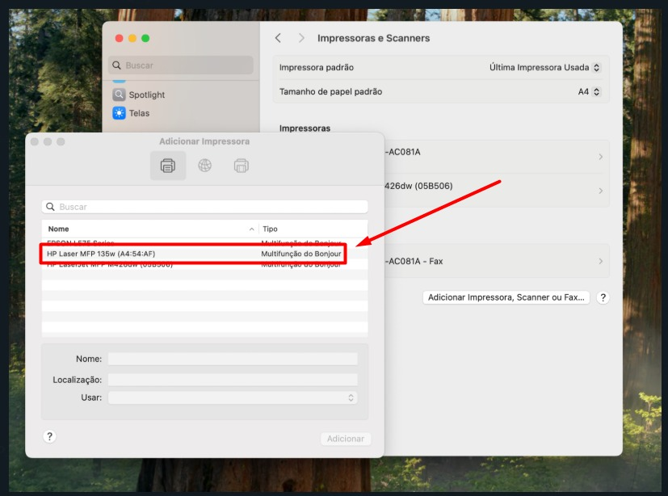

1- Abrir as preferencias do sistema:
Clique no ícone da maçã no canto superior da tela
2- Selecione: Ajustes do sistema
3- Selecione: Impressoras e Scanners
4- Selecione: Adicionar Impressoras, Scanners ou Fax...
5- Selecione a impressora
Modelo: HP Laserjet MFP135w

6- Adicione a impressora
Só aguardar a instalação dos drives e estará pronta para usar.